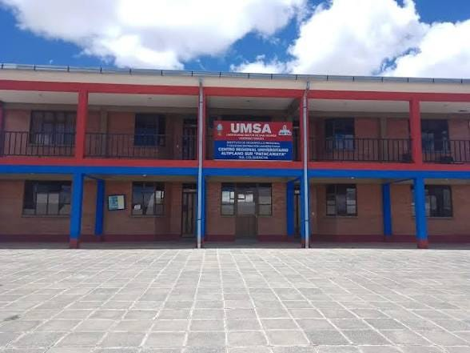
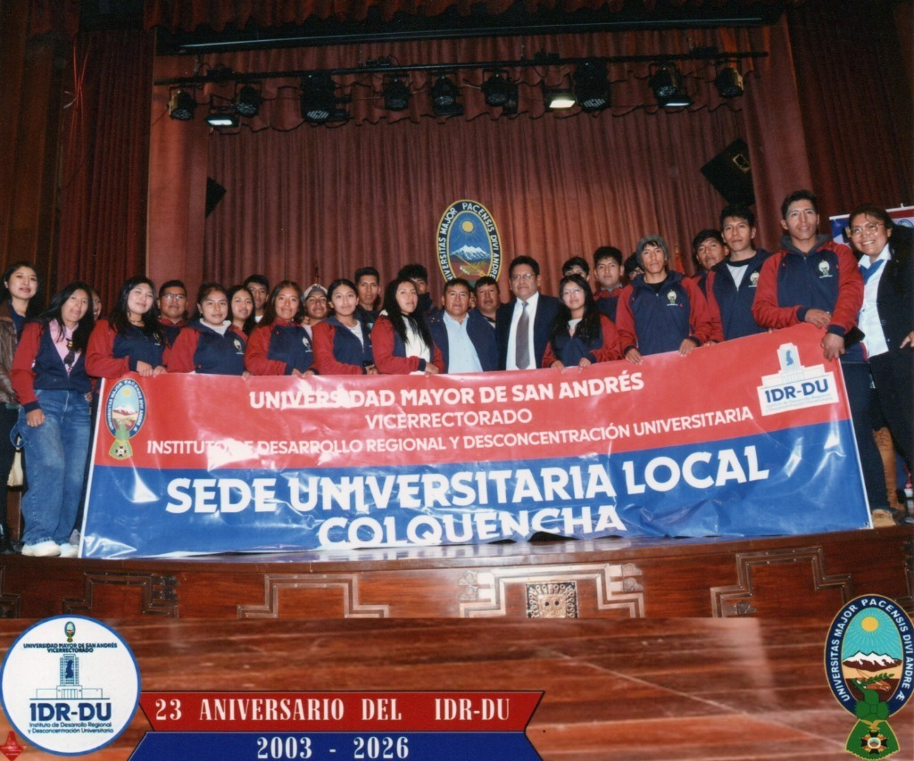
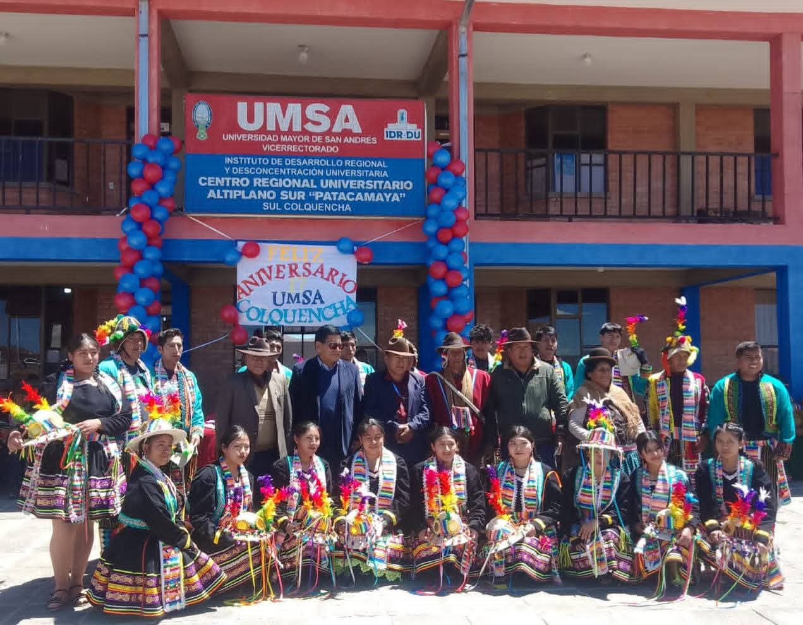

Educación superior para nuestra comunidad
Volver al inicio
La Universidad Mayor de San Andrés (UMSA) desarrolla actividades
académicas y de formación profesional en el municipio de Colquencha.
"PAD TECNICO SUPERIOR EN INFORMÁTICA"
La educación superior permite adquirir conocimientos, desarrollar habilidades y prepararse para el futuro profesional. Para la población de Colquencha, conocer las oportunidades educativas es importante para continuar sus estudios y contribuir al desarrollo de su municipio.
Conoce mediante fotografías los espacios y las actividades relacionadas con la sede-Colquencha.

Espacios relacionados con la formación académica de la comunidad.

Jóvenes que buscan continuar sus estudios y alcanzar sus metas profesionales.

Actividades que contribuyen al aprendizaje y al desarrollo de conocimientos.
Visita la página oficial de la Universidad Mayor de San Andrés para conocer su oferta académica, convocatorias, becas, noticias y otros servicios universitarios.
Visitar página oficial de facebook IDRU Visitar página oficial de la UMSA